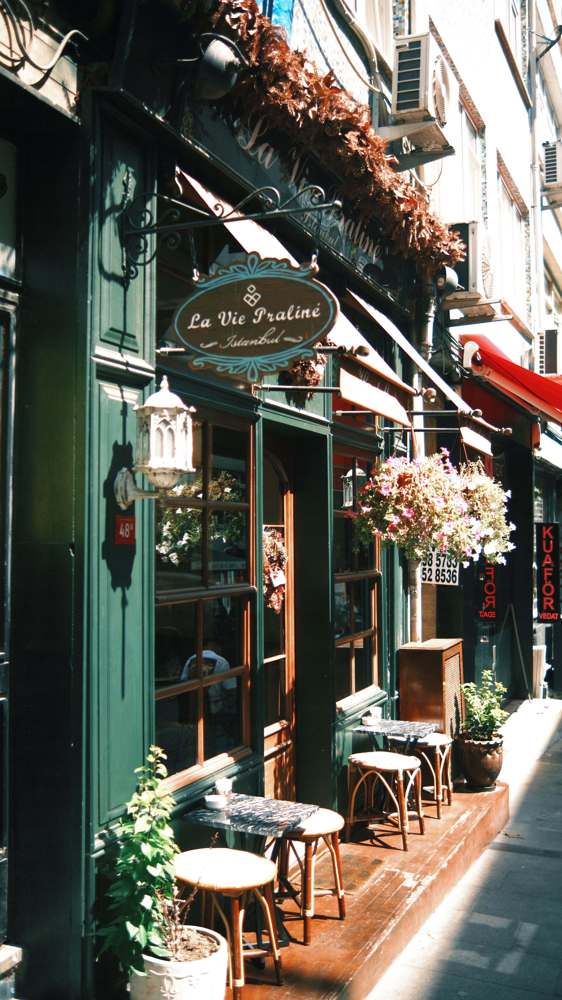

TRAVEL • CULTURE • PLACES
Stories from places worth noticing.
Luma Journal explores places, spaces and everyday moments through thoughtful stories and considered photography.

FEATURED STORY
A Slow Morning in Istanbul
Wandering through quiet streets, neighbourhood cafés and the small details that make a city memorable.
Read the story →